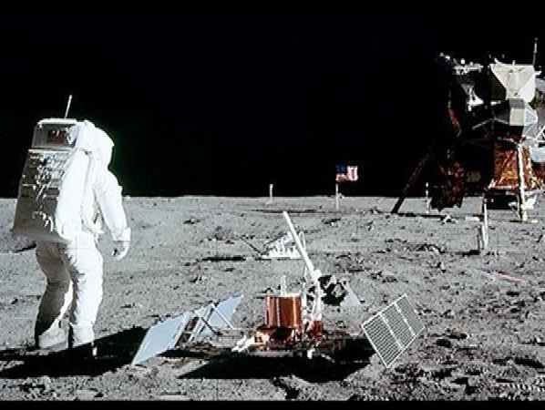

우주 · 외계 아카이브
Area51
자세히 보기미국 네바다주 사막 한가운데의 군사기지에 외계인의 시체와 UFO 기술이 숨겨져 있다는 설이 지속되고 있다.
입구는 있으나 진실은 없다. Area 51은 과연 비어 있을까?
#극비실험 #외계인기술 #군사기지

아폴로 11호
자세히 보기1969년, 아폴로 11호의 달 착륙이 헐리우드 세트장에서 조작된 것이라는 주장이 존재한다. 이는 그림자 각도, 깃발 움직임 등이 근거로 제시된다.
그날 인류는 정말 달에 닿았을까, 아니면 카메라 앞에만 섰을까?
#영상증거조작의혹 #NASA #냉전

지구 동물원 가설
자세히 보기고등 외계 문명이 지구 문명을 관찰하며 개입하지 않는다는 가설이 존재한다. 그들은 단지 우리를 지켜보고 있으며, 문명이 특정 수준에 도달할 때까지 드러나지 않는다.
어쩌면 지금 이 순간에도 우리는 '관찰되고' 있을지 모른다.
#외계감시 #자율진화